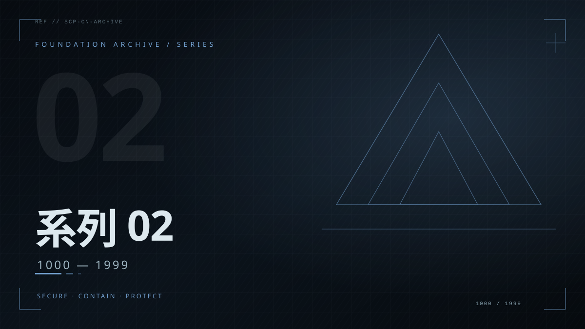
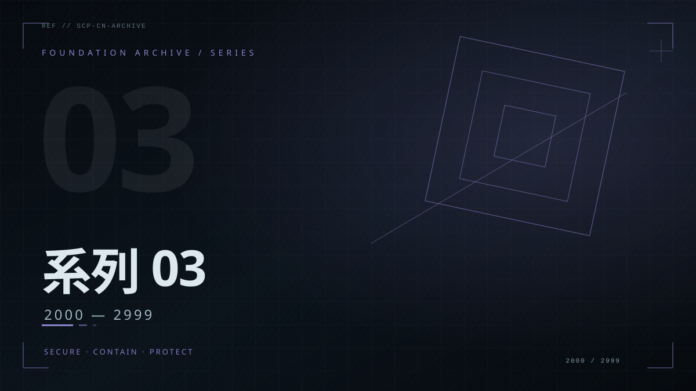
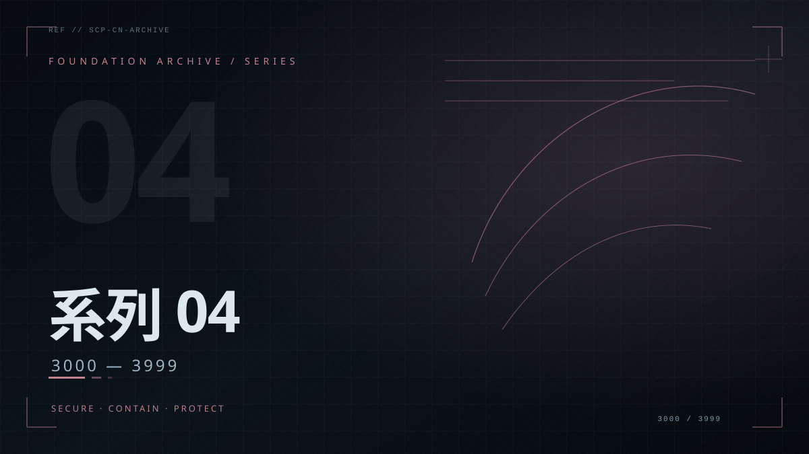
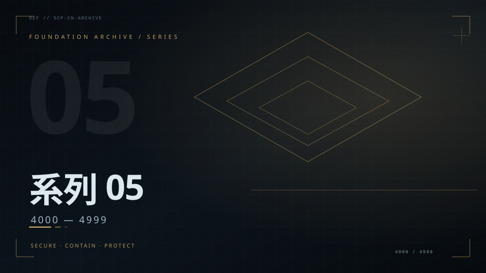
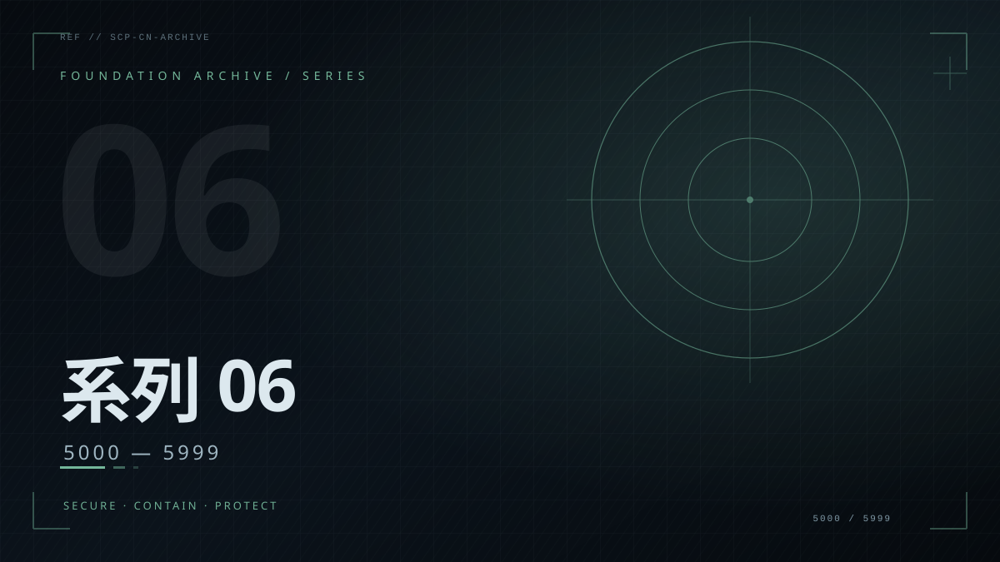
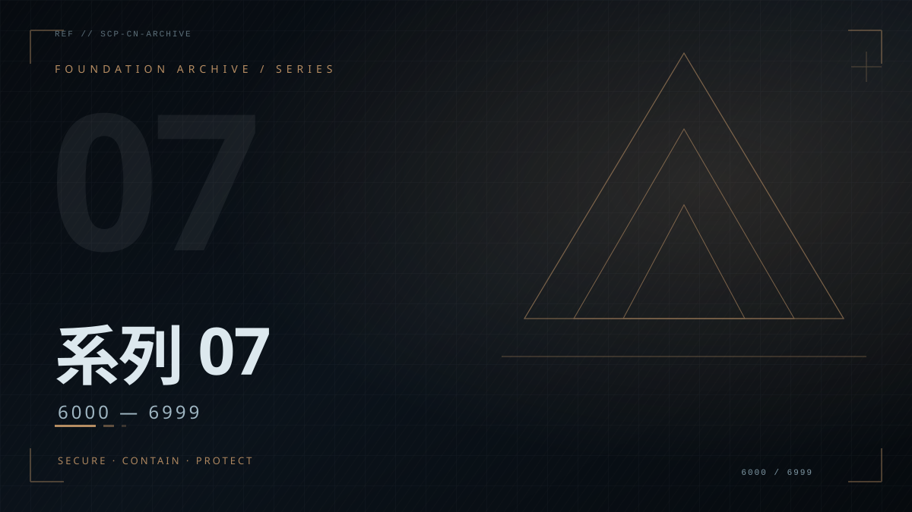
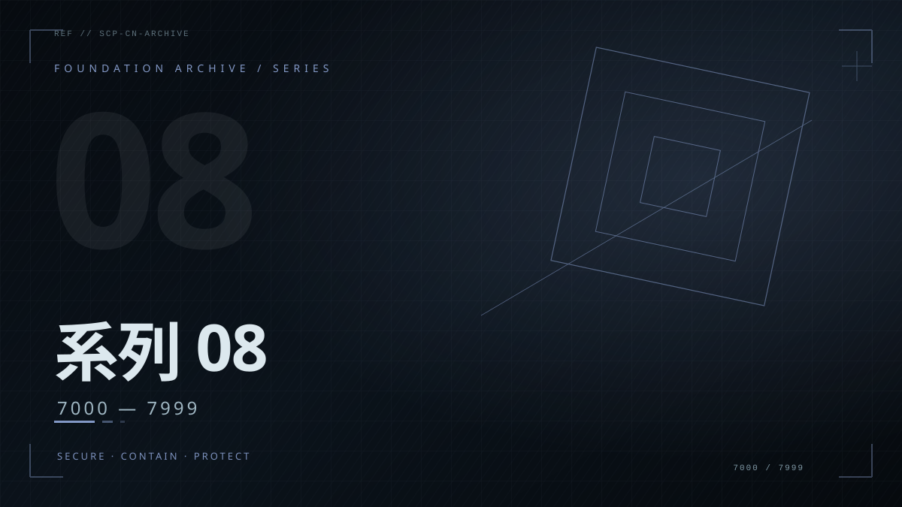
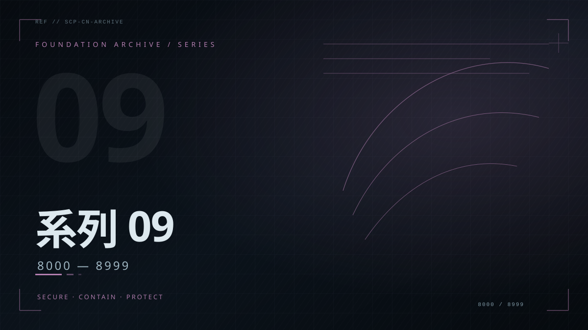
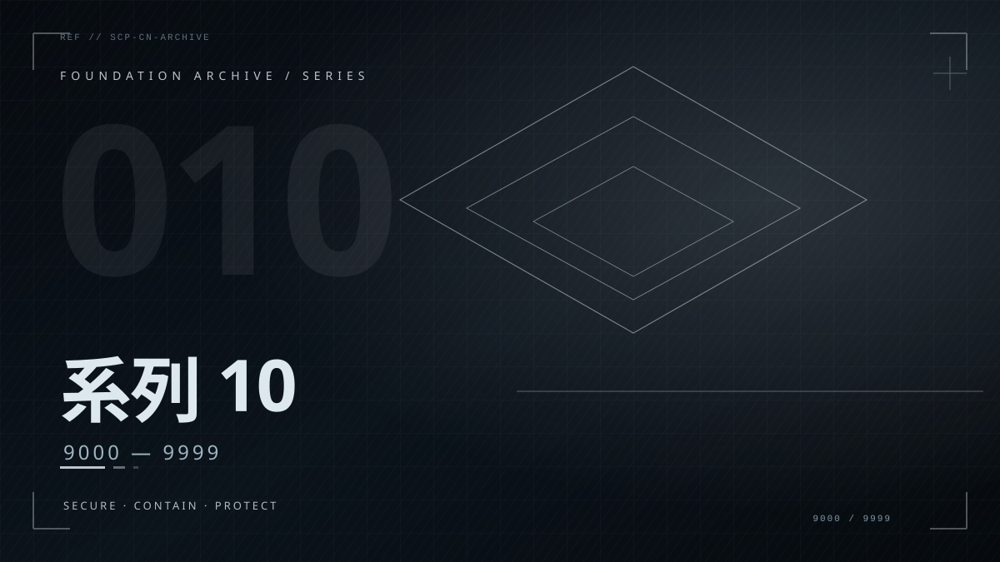

按系列归档
SCP-001 — SCP-9999 / 10 SERIES

SERIES 01
系列 01
001 — 999

SERIES 02
系列 02
1000 — 1999

SERIES 03
系列 03
2000 — 2999

SERIES 04
系列 04
3000 — 3999

SERIES 05
系列 05
4000 — 4999

SERIES 06
系列 06
5000 — 5999

SERIES 07
系列 07
6000 — 6999

SERIES 08
系列 08
7000 — 7999

SERIES 09
系列 09
8000 — 8999

SERIES 10
系列 10
9000 — 9999
随机调阅
RANDOM ACCESS / FROM THE ARCHIVE
正在抽取档案
01 / INDEX
全编号保留
SCP-001 至 SCP-9999 全部列入目录，按系列分组，不因缺少正文而消失。
02 / CLASS
等级与标签
按 Safe、Euclid、Keter 等项目等级筛选，也可按主题标签横向查找。
03 / ACCESS
敏感内容折叠
含成人或敏感内容的档案默认关闭，展开前会显示明确警示。